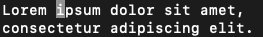

正常模式 #
打开文件 test.txt 后，界面如图

在正常模式 (Normal Mode) 下（通常也叫命令模式 (Command Mode)），依次按照以下表格中的按键得出的结果如右图所示（为方便演示，命令行窗口将缩小展示），最左侧的演示步骤是指右图的结果是从上一步骤经此操作得出。
光标的移动 #
| 按键 | 说明 | 从 | 到 |
|---|---|---|---|
| j / ⬇ | 向下移动光标 |  |
 |
| l / ➡ | 向右移动光标 | |
|
| k / ⬆ | 向上移动光标 | |
|
| h / ⬅ | 向左移动光标 | |
|
| 8l / 8➡ | 命令前加数字可代表命令操作次数，此处代表向右移动光标 8 次 | |
|
| W / w | 移动到下一个单词头 | |
 |
| B / b | 移动到上一个单词头 |  或 或 |
|
| E / e | 移动到下一个单词尾 | 或  |
|
| ge | 移动到上一个单词尾 | 或 | |
| Home / 0 | 移动到行首 |  |
|
| End / $ | 移动到行尾 |  |
|
| ^ | 移动到本行第一个不是空白字符的位置 | |
|
| g_ | 移动到本行最后一个不是空白字符的位置 |  |
|
| f (a / u) | 移动到本行下一个为 a / u 的字符处 |
|
/ |
| F (a / u) | 移动到本行上一个为 a / u 的字符处 |
/ | |
| t (a / u) | 移动到本行下一个为 a / u 的字符的上一个字符处 |
|
/ |
| T (a / u) | 移动到本行上一个为 a / u 的字符的下一个字符处 |
/ | |
| (fa) ; | 在使用 f/F/t/T 进行跳转时，再使用 ; 可快速跳转至下一指定字符位置 |
|
fa 后： ; 后：  |
| (Fa) , | 在使用 f/F/t/T 进行跳转时，再使用 , 可快速跳转至上一指定字符位置 |
Fa 后： ; 后： |
|
| ) | 移动至下一个句首 | ||
| ( | 移动至上一个句首 | ||
| (3 / 5) G | 移动至第 3/5 行的行首 | ||
| GG | 移动至第 1 行的行首，相当于 1G | ||
| G | 移动至最后一行的行首 |